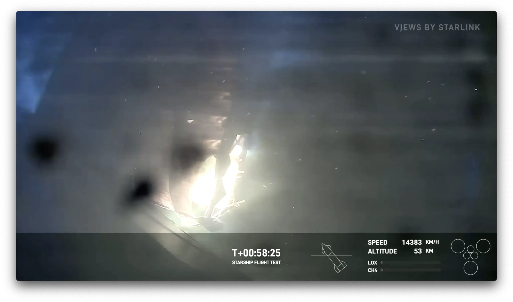
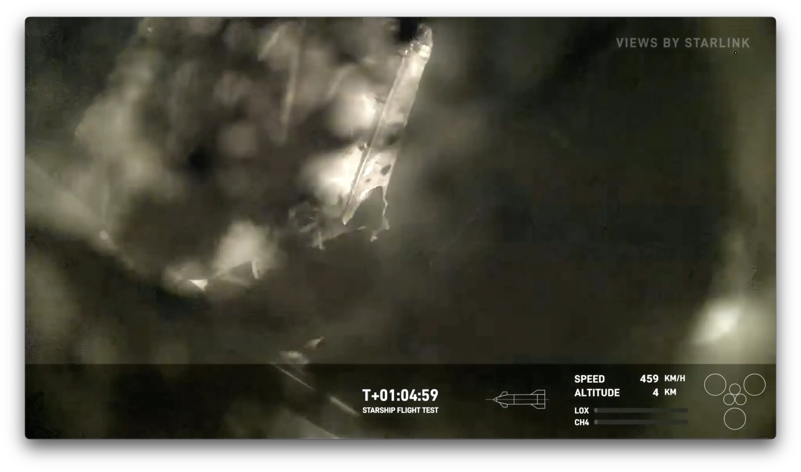

They Did It
They did it, holy shit they did it. That largest rocket ever flown made a powered water landing this morning. As well as its massive booster.
The Big One
The Starship stack is crazy big. Bigger than the Saturn V.
Reentry is super problematic. The crazy heat, and pressure is really hard to deal with. While Starship did make it through Reentry, it almost didn’t.
The forward right fin took a lot of heat damage. As in a good chunk of it melted. And the whole thing was caught on video.

The big question was, will it make it. If that fin was lost, it’s over. Thankfully, that fin was a damn trooper. Not only did it hang on, it still worked! Allowing Starship to flip upright, and preform a soft water landing.

They still have a lot of work to do. But holy shit, they landed it. And after watching it, I can’t wait for test flight 5.
Definitely check out Scott Manley’s breakdown of the whole thing.